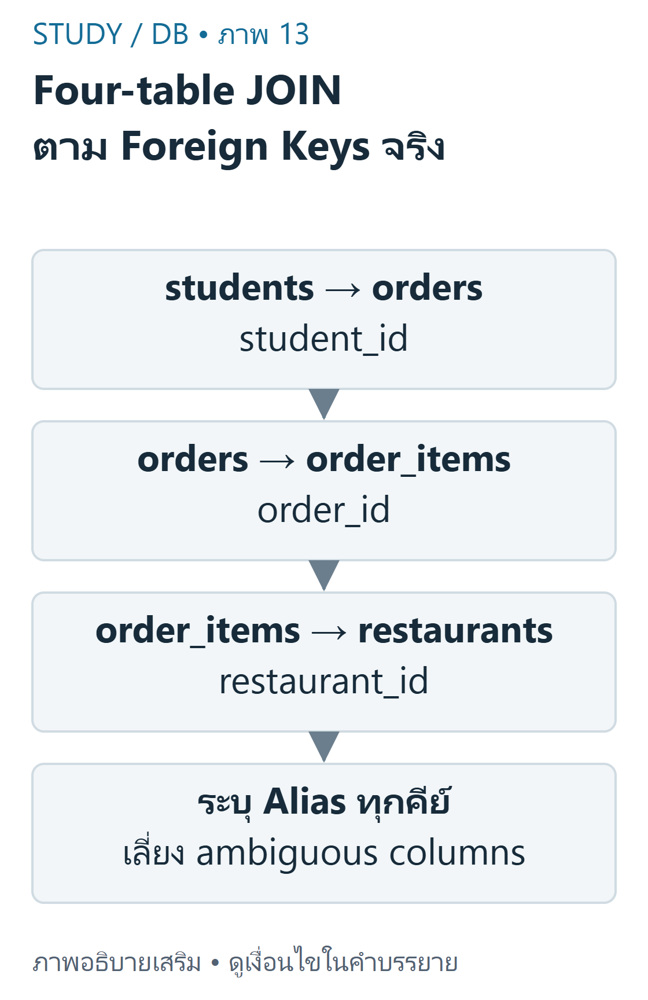
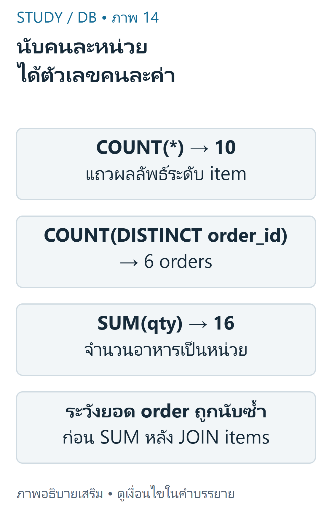

DB 07 — เชื่อมหลายตารางและแก้ข้อผิดพลาด ใช้ DB-D01 ชุดเดียวกับการบ้าน DB-H01 ข้อ1–13; คำตอบเป็นการคำนวณอิสระ ไม่ใช่เฉลยทางการ
เป้าหมายการเรียนรู้ ต่อ JOIN ตาม Foreign Key ของสี่ตาราง และแยกจำนวนคน/ออเดอร์/รายการอาหาร ตรวจ ON, WHERE, aliases และ NULL ก่อนตีความผลลัพธ์ อ่าน EXPLAIN เป็นแผนของ engine ไม่ใช่คำสั่งรับรองความเร็ว อ่านเส้นความสัมพันธ์ก่อนเขียน SQL Campus Delivery เชื่อม students.student_id → orders.student_id, orders.order_id → order_items.order_id และ restaurants.restaurant_id → order_items.restaurant_id ร้านอาหารไม่ได้ผูกโดยตรงกับ orders ใน schema นี้ ออเดอร์เดียวจึงอาจมีรายการจากหลายร้าน ต้องอ่าน schema จริงก่อนสมมติความสัมพันธ์

ภาพเขียนเสริม: Four-table JOIN ตาม Foreign Keys จริง — ผลอยู่ระดับ item ตามการจับคู่ภาพเขียนเสริม ตรวจตามบทเรียนและเอกสารเทคนิค อ่านภาพ: เชื่อม students→orders ด้วย student_id แล้ว orders→order_items ด้วย order_id และ items→restaurants ด้วย restaurant_id ร้านอยู่ที่ item จึงไม่เดาว่า order มี FK ร้านโดยตรง
ข้อมูลจำลองต้นฉบับมี8นิสิต,6ร้าน,10ออเดอร์,14รายการอาหาร ตารางนิสิตและออเดอร์อยู่ใน DB02/DB05 ต่อไปนี้คือร้านและรายการครบชุดเพื่อให้ตรวจผลสี่ตารางได้ด้วยตนเอง
ผลลัพธ์สี่ตาราง เริ่มจากสองตารางแล้วเพิ่มตารางลูกทีละตัว จำนวนแถวของผลสุดท้ายเป็นจำนวนการจับคู่ ไม่ใช่จำนวนออเดอร์ distinct เมื่อเลือกเฉพาะ delivered จะได้10แถวจาก6ออเดอร์ รวม quantity16หน่วย การมีสองรายการในออเดอร์เดียวทำให้ order_id ซ้ำอย่างถูกต้อง
SQL คัดลอกโค้ด
1 SELECT s.student_name,o.order_id,oi.menu_name,r.restaurant_name,oi.qty,o.status 2 FROM students s 3 JOIN orders o 4 ON o.student_id=s.student_id 5 JOIN order_items oi 6 ON oi.order_id=o.order_id 7 JOIN restaurants r 8 ON r.restaurant_id=oi.restaurant_id 9 WHERE o.status='delivered' 10 ORDER BY o.order_id,oi.item_id; ตัวอย่างพื้นฐาน: order5001มีสองรายการจึงปรากฏสองแถว ตัวอย่างที่ท้าทาย: ถ้าต้องหายอดเงินออเดอร์หลัง JOIN items แล้ว SUM(total_amount) ตรงๆ ออเดอร์ที่มีหลายรายการจะถูกนับซ้ำ ควรรวมที่ระดับordersก่อน หรือใช้ตารางย่อยที่มีหนึ่งแถวต่อorder_id การใช้ SUM(DISTINCT total_amount) ไม่แก้ทั่วไป เพราะออเดอร์ต่างกันอาจมียอดเท่ากัน
จำนวนแถวและหน่วยของการนับ COUNT(*) นับแถวผลลัพธ์ COUNT(column) ไม่นับNULL และ COUNT(DISTINCT key) นับidentityที่ต่างกัน การเลือกฟังก์ชันต้องตรงคำถาม มิฉะนั้นได้ตัวเลขจริงแต่ตอบผิดหน่วย

ภาพเขียนเสริม: นับคนละหน่วย ได้ตัวเลขคนละค่า — อย่า SUM order total ซ้ำตามหลาย itemsภาพเขียนเสริม ตรวจตามบทเรียนและเอกสารเทคนิค อ่านภาพ: delivered four-table JOIN มี10 item rows จาก6 distinct orders รวมquantity16หน่วย COUNT rows,COUNT DISTINCT orders และ SUM(qty)ตอบคนละคำถาม
SQL คัดลอกโค้ด
1 SELECT COUNT(*) AS rows_n,COUNT(DISTINCT o.order_id) AS orders_n,SUM(oi.qty) AS quantity 2 FROM orders o 3 JOIN order_items oi 4 ON oi.order_id=o.order_id 5 WHERE o.status='delivered'; สำหรับ LEFT students→orders ทั้งชุด COUNT(*)=13, COUNT(o.order_id)=10, COUNT(DISTINCT s.student_id)=8 หากต้องการจำนวนออเดอร์ต่อคนต้องนับ o.order_id เพื่อให้คนไม่มีออเดอร์ได้0 ไม่ใช่1 จากแถวNULLที่เพิ่มมา
SQL คัดลอกโค้ด
1 SELECT s.student_id,COUNT(o.order_id) AS orders_n 2 FROM students s 3 LEFT JOIN orders o 4 ON o.student_id=s.student_id 5 GROUP BY s.student_id 6 ORDER BY s.student_id; ตรวจข้อผิดพลาดอย่างเป็นลำดับ ก่อนแก้ query ให้ระบุหน่วยผลลัพธ์ ตรวจ PK/FK ดูตัวอย่างแถว และต่อJOINทีละตัว Wrong key s.student_id=o.order_id เปรียบเทียบ101–108กับ5001–5010จึงไม่จับคู่เลย แม้ชนิดข้อมูลเป็นเลขเหมือนกันก็ไม่ได้หมายถึงสิ่งเดียวกัน ละ ON ใน CROSS JOIN จะได้8×10=80แถว ไม่ใช่10ออเดอร์
ON status='delivered' ในLEFTรักษานิสิตครบ8และให้9แถว ส่วน WHERE status='delivered' ให้6แถวและตัดนิสิตที่ไม่มีdeliveredออก ไม่ควรย้ายเงื่อนไขโดยคิดว่าเป็นเพียงการจัดรูปแบบ
ดัชนี (Index) บน FK/คอลัมน์ค้นหาอาจช่วยให้ engine หาคู่ได้เร็วขึ้น แต่ใช้พื้นที่และมีค่าใช้จ่ายตอนเขียน ตารางเล็กอาจสแกนทั้งตารางอย่างเหมาะสม จึงไม่ตัดสินว่า EXPLAIN แสดง ALL แล้วผิดเสมอ
SQL คัดลอกโค้ด
1 EXPLAIN SELECT s.student_id,o.order_id 2 FROM students s 3 JOIN orders o 4 ON o.student_id=s.student_id; EXPLAIN ให้แผนประมาณของMariaDB/MySQLรุ่นและสถิติที่ใช้อยู่ ไม่ใช่ผลเวลา queryจริง และ optimizer ไม่จำเป็นต้องทำตามลำดับlogicalที่สไลด์DB-S02หน้า13ใช้สอน
เชื่อมกับการบ้านครบ13ข้อ ตารางนี้ชี้ไปยังคำสั่งที่ทดสอบใน scripts/database-queries.json และผลที่แสดงในบทDB05–07 นักศึกษาควรเขียนและอธิบายเอง ไม่คัดลอกเป็นคำตอบส่งงานโดยไม่เข้าใจ
ฝึกคิดและข้อผิดพลาดที่พบบ่อย ข้อ1: ผลJOINมี10แถวแปลว่ามี10ออเดอร์deliveredหรือไม่? เฉลย: ไม่ มี6ออเดอร์ใน10item rows ต้องCOUNT(DISTINCT order_id)ข้อ2: ร้าน206ชื่อNULL Cafeควรหาด้วยIS NULLหรือไม่? เฉลย: ไม่ ชื่อเป็นข้อความจริง ใช้='NULL Cafe'; missing itemเช็กi.item_id IS NULLข้อ3: EXPLAINจะเท่ากันทุกเครื่องหรือไม่? เฉลย: ไม่ แผนขึ้นกับengine/version/index/statisticsและขนาดข้อมูลสรุปทบทวน ไล่เส้นFKจริงและหน่วยแถว; อย่าDISTINCTกลบความผิดโดยไม่อธิบาย ONกับWHEREเปลี่ยนความหมายouter joinได้ แยกCOUNTแถว,distinctorderและSUMquantity; EXPLAINใช้ตรวจแผนไม่ใช่การรับรองเวลา เนื้อหาฝึกเขียนและเฉลยต่อไปนี้เรียบเรียงเพื่อการเรียน ไม่ใช่ข้อสอบจริงหรือเฉลยทางการของผู้สอน เว็บไซต์นี้แสดงตัวอย่างแบบ static; ไม่ส่ง SQL, PHP หรือข้อมูลบัญชีไปรันบนเซิร์ฟเวอร์มหาวิทยาลัย
แหล่งข้อมูลและขอบเขต DB-S02 หน้า28–32 และข้อสังเกตหน้า13,22; DB-H01 ข้อ1–13; DB-D01. อ้างอิงเสริม MySQL JOIN , aggregate functions , EXPLAIN .
บัญชีแหล่งข้อมูลและข้อจำกัด ระบุเลขหน้ากายภาพของ PDF ทุกครั้ง เอกสารต้นฉบับที่ผู้ใช้ให้เป็นไฟล์ local-only และไม่ได้เผยแพร่ซ้ำ ภาพและโจทย์ฝึกเป็นงานเขียนเสริมที่แยกจากต้นฉบับ
โหมดฝึกทำโจทย์ โจทย์ฝึกที่ผู้เขียนจัดทำ ไม่ใช่ข้อสอบจริงหรือเฉลยทางการ; การประเมินตนเองไม่รวมในคะแนนอัตโนมัติ
โจทย์ฝึกที่ผู้เขียนจัดทำ ไม่ใช่ข้อสอบจริง: เส้นทางJOINสี่ตารางCampusที่ตรงschemaคืออะไร? A. students→restaurants→orders→users B. orders→profile→skill→students C. students→orders→restaurantsโดยเดาคีย์ตรง D. students→orders→order_items→restaurants ทบทวนเนื้อหาที่เกี่ยวข้อง อ่านเฉลยและแนวประเมิน students→orders→order_items→restaurants
restaurantFKอยู่ในitemsจึงต้องผ่านitems
โจทย์ฝึกที่ผู้เขียนจัดทำ ไม่ใช่ข้อสอบจริง: ทำไมorder5001ซ้ำสองrowในผลสี่ตาราง? A. มีสองitemmatches B. PKordersซ้ำผิดconstraint C. JOINต้องลบซ้ำเสมอ D. มีstudent5001สองคน ทบทวนเนื้อหาที่เกี่ยวข้อง อ่านเฉลยและแนวประเมิน มีสองitemmatches
แถวผลอยู่ระดับitem ไม่ใช่orderอย่างเดียว
โจทย์ฝึกที่ผู้เขียนจัดทำ ไม่ใช่ข้อสอบจริง: Campusfourtableเฉพาะdeliveredได้กี่joineditemrows? ทบทวนเนื้อหาที่เกี่ยวข้อง อ่านเฉลยและแนวประเมิน 10
นับitemsของ6deliveredordersได้10matches
โจทย์ฝึกที่ผู้เขียนจัดทำ ไม่ใช่ข้อสอบจริง: ONs.student_id=o.order_idให้0matchesในfixtureเพราะอะไร? A. เพราะINNERห้ามINT B. เพราะUTF8ผิดเสมอ C. เทียบidentityคน101–108กับorder5001–5010คนละความหมาย D. เพราะWHEREไม่มีstatus ทบทวนเนื้อหาที่เกี่ยวข้อง อ่านเฉลยและแนวประเมิน เทียบidentityคน101–108กับorder5001–5010คนละความหมาย
ชนิดเหมือนกันไม่ทำให้คีย์มีความหมายเดียวกัน
โจทย์ฝึกที่ผู้เขียนจัดทำ ไม่ใช่ข้อสอบจริง: SUMtotal_amountหลังJOINitemsตรงๆอาจผิดเพราะอะไร? A. SUMไม่รองรับDECIMAL B. MySQLบังคับเงินเป็น0 C. FKทำให้เงินหายทุกครั้ง D. ยอดorderถูกซ้ำตามหลายitems ทบทวนเนื้อหาที่เกี่ยวข้อง อ่านเฉลยและแนวประเมิน ยอดorderถูกซ้ำตามหลายitems
ต้องaggregateระดับorderที่ถูกก่อน
โจทย์ฝึกที่ผู้เขียนจัดทำ ไม่ใช่ข้อสอบจริง: เขียนสี่JOINสำหรับdeliveredพร้อมหน่วยผลลัพธ์ ทบทวนเนื้อหาที่เกี่ยวข้อง อ่านเฉลยและแนวประเมิน ประเมินคำอธิบายตามเกณฑ์ทีละข้อ; โจทย์นี้ไม่มีคะแนนอัตโนมัติ
3FKถูก WHEREstatusถูก อธิบาย10itemrows/6orders คลังข้อสอบฝึกเพิ่มเติม โจทย์ที่ผู้เขียนจัดทำ ไม่ใช่ข้อสอบจริง การประเมินตนเองไม่รวมคะแนน
โจทย์ฝึกที่ผู้เขียนจัดทำ ไม่ใช่ข้อสอบจริง: เส้นทางJOINสี่ตารางCampusที่ตรงschemaคืออะไร? A. students→restaurants→orders→users B. orders→profile→skill→students C. students→orders→restaurantsโดยเดาคีย์ตรง D. students→orders→order_items→restaurants ทบทวนเนื้อหาที่เกี่ยวข้อง อ่านเฉลยและแนวประเมิน students→orders→order_items→restaurants
restaurantFKอยู่ในitemsจึงต้องผ่านitems
โจทย์ฝึกที่ผู้เขียนจัดทำ ไม่ใช่ข้อสอบจริง: ทำไมorder5001ซ้ำสองrowในผลสี่ตาราง? A. มีสองitemmatches B. PKordersซ้ำผิดconstraint C. JOINต้องลบซ้ำเสมอ D. มีstudent5001สองคน ทบทวนเนื้อหาที่เกี่ยวข้อง อ่านเฉลยและแนวประเมิน มีสองitemmatches
แถวผลอยู่ระดับitem ไม่ใช่orderอย่างเดียว
โจทย์ฝึกที่ผู้เขียนจัดทำ ไม่ใช่ข้อสอบจริง: Campusfourtableเฉพาะdeliveredได้กี่joineditemrows? ทบทวนเนื้อหาที่เกี่ยวข้อง อ่านเฉลยและแนวประเมิน 10
นับitemsของ6deliveredordersได้10matches
โจทย์ฝึกที่ผู้เขียนจัดทำ ไม่ใช่ข้อสอบจริง: ONs.student_id=o.order_idให้0matchesในfixtureเพราะอะไร? A. เพราะINNERห้ามINT B. เพราะUTF8ผิดเสมอ C. เทียบidentityคน101–108กับorder5001–5010คนละความหมาย D. เพราะWHEREไม่มีstatus ทบทวนเนื้อหาที่เกี่ยวข้อง อ่านเฉลยและแนวประเมิน เทียบidentityคน101–108กับorder5001–5010คนละความหมาย
ชนิดเหมือนกันไม่ทำให้คีย์มีความหมายเดียวกัน
โจทย์ฝึกที่ผู้เขียนจัดทำ ไม่ใช่ข้อสอบจริง: SUMtotal_amountหลังJOINitemsตรงๆอาจผิดเพราะอะไร? A. SUMไม่รองรับDECIMAL B. MySQLบังคับเงินเป็น0 C. FKทำให้เงินหายทุกครั้ง D. ยอดorderถูกซ้ำตามหลายitems ทบทวนเนื้อหาที่เกี่ยวข้อง อ่านเฉลยและแนวประเมิน ยอดorderถูกซ้ำตามหลายitems
ต้องaggregateระดับorderที่ถูกก่อน
โจทย์ฝึกที่ผู้เขียนจัดทำ ไม่ใช่ข้อสอบจริง: เขียนสี่JOINสำหรับdeliveredพร้อมหน่วยผลลัพธ์ ทบทวนเนื้อหาที่เกี่ยวข้อง อ่านเฉลยและแนวประเมิน ประเมินคำอธิบายตามเกณฑ์ทีละข้อ; โจทย์นี้ไม่มีคะแนนอัตโนมัติ
3FKถูก WHEREstatusถูก อธิบาย10itemrows/6orders โจทย์ฝึกที่ผู้เขียนจัดทำ ไม่ใช่ข้อสอบจริง: Campusdeliveredfourtable10rowsมีquantityรวมเท่าใด? ทบทวนเนื้อหาที่เกี่ยวข้อง อ่านเฉลยและแนวประเมิน 16
SUMquantityจากitemrowsได้16 ไม่เท่าCOUNTrows10
โจทย์ฝึกที่ผู้เขียนจัดทำ ไม่ใช่ข้อสอบจริง: จำนวนdistinctordersในdeliveredfourtableคือเท่าใด? ทบทวนเนื้อหาที่เกี่ยวข้อง อ่านเฉลยและแนวประเมิน 6
6orderIDsต่างกันแม้มี10itemrows
โจทย์ฝึกที่ผู้เขียนจัดทำ ไม่ใช่ข้อสอบจริง: Ambiguousstudent_idควรแก้อย่างไร? A. ลบWHEREทั้งหมด B. renameไฟล์PHP C. เปลี่ยนDarkmode D. ระบุs.student_idหรือo.student_idตามความหมาย ทบทวนเนื้อหาที่เกี่ยวข้อง อ่านเฉลยและแนวประเมิน ระบุs.student_idหรือo.student_idตามความหมาย
ทั้งสองtableมีcolumnชื่อนี้จึงต้องqualify
โจทย์ฝึกที่ผู้เขียนจัดทำ ไม่ใช่ข้อสอบจริง: EXPLAINเป็นหลักฐานใด? A. แผนที่engineประมาณ ไม่ใช่เวลาที่รันจริง B. ผลคะแนนExam C. เวลารันแน่นอนทุกเครื่อง D. คำรับรองว่าต้องJOINตามข้อความซ้ายไปขวา ทบทวนเนื้อหาที่เกี่ยวข้อง อ่านเฉลยและแนวประเมิน แผนที่engineประมาณ ไม่ใช่เวลาที่รันจริง
planขึ้นกับversion/index/statisticsและoptimizer
โจทย์ฝึกที่ผู้เขียนจัดทำ ไม่ใช่ข้อสอบจริง: restaurantหนึ่งอาจมีหลายitemrowsจากต่างordersหรือไม่? A. ไม่ได้เพราะrestaurantPKunique B. ได้ตาม1:Nของrestaurant→items C. ต้องมีrestaurantต่อคนเท่านั้น D. ทำให้FKผิดเสมอ ทบทวนเนื้อหาที่เกี่ยวข้อง อ่านเฉลยและแนวประเมิน ได้ตาม1:Nของrestaurant→items
uniqueparentไม่ได้ห้ามchildหลายrows
โจทย์ฝึกที่ผู้เขียนจัดทำ ไม่ใช่ข้อสอบจริง: restaurantsLEFTitemsครบทุกstatusได้กี่rowsในCampus? ทบทวนเนื้อหาที่เกี่ยวข้อง อ่านเฉลยและแนวประเมิน 15
14itemmatches+1unmatchedrestaurant206
โจทย์ฝึกที่ผู้เขียนจัดทำ ไม่ใช่ข้อสอบจริง: COUNT(*)หลังstudentsLEFTordersเทียบCOUNT(order_id)ต่างเท่าใดในfixture? A. 8กับ8 B. 10กับ13 C. 0กับ3 D. 13กับ10 ทบทวนเนื้อหาที่เกี่ยวข้อง อ่านเฉลยและแนวประเมิน 13กับ10
สามunmatchedrowsมีorder_idNULL
โจทย์ฝึกที่ผู้เขียนจัดทำ ไม่ใช่ข้อสอบจริง: CROSSJOIN8students10ordersได้กี่คู่? ทบทวนเนื้อหาที่เกี่ยวข้อง อ่านเฉลยและแนวประเมิน 80
Cartesianproduct8×10;ไม่ใช่FKmatching
โจทย์ฝึกที่ผู้เขียนจัดทำ ไม่ใช่ข้อสอบจริง: SUM(DISTINCTtotal_amount)แก้ยอดซ้ำจากJOINได้ทั่วไปหรือไม่? A. ได้ทุกdataset B. ไม่ ordersต่างกันอาจมียอดเท่ากัน C. ทำให้COUNTitemsถูกเอง D. เท่ากับSUMระดับorderเสมอ ทบทวนเนื้อหาที่เกี่ยวข้อง อ่านเฉลยและแนวประเมิน ไม่ ordersต่างกันอาจมียอดเท่ากัน
DISTINCTvalueไม่ใช่DISTINCTorderidentity
โจทย์ฝึกที่ผู้เขียนจัดทำ ไม่ใช่ข้อสอบจริง: IndexบนFKอาจมีข้อแลกเปลี่ยนใด? A. ไม่ใช้พื้นที่เลย B. ทำให้ทุกqueryเร็วขึ้นแน่นอน C. ช่วยค้นหาแต่ใช้พื้นที่และค่าเขียนเพิ่มเติม D. แทนAuthorization ทบทวนเนื้อหาที่เกี่ยวข้อง อ่านเฉลยและแนวประเมิน ช่วยค้นหาแต่ใช้พื้นที่และค่าเขียนเพิ่มเติม
indexไม่ใช่คำรับรองperformanceทุกขนาดข้อมูล
โจทย์ฝึกที่ผู้เขียนจัดทำ ไม่ใช่ข้อสอบจริง: ตารางเล็กEXPLAINเป็นALLต้องแก้เป็นindexscanเสมอหรือไม่? A. ต้องเสมอทุกquery B. แปลว่าsyntaxผิด C. แปลว่าFKไม่มีทุกครั้ง D. ไม่ fullscanอาจเหมาะสม ต้องวัดบริบท ทบทวนเนื้อหาที่เกี่ยวข้อง อ่านเฉลยและแนวประเมิน ไม่ fullscanอาจเหมาะสม ต้องวัดบริบท
optimizercostและขนาดtableสำคัญ
โจทย์ฝึกที่ผู้เขียนจัดทำ ไม่ใช่ข้อสอบจริง: orderเดียวดึงอาหารจากหลายร้านได้ตามschemaนี้หรือไม่? A. ได้ ร้านถูกอ้างที่item B. ไม่ได้เพราะorderมีFKrestaurantโดยตรงเสมอ C. ได้เฉพาะNULLCafe D. FKห้ามทั้งหมด ทบทวนเนื้อหาที่เกี่ยวข้อง อ่านเฉลยและแนวประเมิน ได้ ร้านถูกอ้างที่item
อย่าสมมติbusinessconstraintที่schema/sourceไม่ได้ระบุ
โจทย์ฝึกที่ผู้เขียนจัดทำ ไม่ใช่ข้อสอบจริง: ถ้าต้องการuniqueorderidsควรเลือกอะไร? A. DISTINCTmenu_nameเพื่อแทนorder B. DISTINCTo.order_id C. COUNTrestaurantอย่างเดียว D. ทุกitem_idแล้วเรียกorderlist ทบทวนเนื้อหาที่เกี่ยวข้อง อ่านเฉลยและแนวประเมิน DISTINCTo.order_id
เลือกidentityตรงหน่วยที่ถาม
โจทย์ฝึกที่ผู้เขียนจัดทำ ไม่ใช่ข้อสอบจริง: การบ้าน13ข้อถูกใช้ในบทเรียนอย่างไร? A. อ้างว่าเป็นFinalexamจริงทั้งหมด B. อ้างน้ำหนักคะแนนแน่นอน C. อ้างโจทย์และให้การคำนวณอิสระ ไม่อ้างofficialexamkey D. คัดsourcePDFขึ้นpublic ทบทวนเนื้อหาที่เกี่ยวข้อง อ่านเฉลยและแนวประเมิน อ้างโจทย์และให้การคำนวณอิสระ ไม่อ้างofficialexamkey
ข้อจำกัดหลักฐานต้องชัด
โจทย์ฝึกที่ผู้เขียนจัดทำ ไม่ใช่ข้อสอบจริง: ควรเริ่มdebugmultiJOINด้วยวิธีใด? A. ใส่DISTINCTจนตัวเลขพอดี B. เปลี่ยนทุกJOINเป็นCROSS C. ลบconstraints D. ต่อทีละtableและตรวจkey/ตัวอย่างrows/จำนวน ทบทวนเนื้อหาที่เกี่ยวข้อง อ่านเฉลยและแนวประเมิน ต่อทีละtableและตรวจkey/ตัวอย่างrows/จำนวน
incrementalverificationช่วยพบจุดขยาย/หาย
โจทย์ฝึกที่ผู้เขียนจัดทำ ไม่ใช่ข้อสอบจริง: COUNT(DISTINCTstudent_id)ในLEFTทั้งชุดตอบอะไร? A. จำนวนนิสิตต่างกันที่ถูกรักษา8 B. จำนวนorders10 C. quantity21 D. จำนวนitems14 ทบทวนเนื้อหาที่เกี่ยวข้อง อ่านเฉลยและแนวประเมิน จำนวนนิสิตต่างกันที่ถูกรักษา8
countidentityต่างcountrow
โจทย์ฝึกที่ผู้เขียนจัดทำ ไม่ใช่ข้อสอบจริง: เพิ่มWHEREright.statusหลังLEFTโดยไม่ตรวจผลเสี่ยงอะไร? A. ทำให้เป็นRIGHTทุกกรณี B. ตัดnull-extendedrowsที่ควรอยู่ C. เข้ารหัสpassword D. เพิ่มrestaurantอัตโนมัติ ทบทวนเนื้อหาที่เกี่ยวข้อง อ่านเฉลยและแนวประเมิน ตัดnull-extendedrowsที่ควรอยู่
ดูONvsWHEREตามความต้องการจริง
โจทย์ฝึกที่ผู้เขียนจัดทำ ไม่ใช่ข้อสอบจริง: หา206ที่ไม่มีitemควรเช็กอะไรหลังrestaurantsLEFTitems? A. r.restaurant_nameISNULL B. r.restaurant_idISNULL C. i.item_idISNULL D. i.quantity=0 ทบทวนเนื้อหาที่เกี่ยวข้อง อ่านเฉลยและแนวประเมิน i.item_idISNULL
itemPKnonnullบอกmissingrelatedrowได้
โจทย์ฝึกที่ผู้เขียนจัดทำ ไม่ใช่ข้อสอบจริง: qtyรวม16กับdeliveredorders6เป็นข้อมูลขัดกันหรือไม่? A. ขัดเพราะต้องเท่ากัน B. ขัดเพราะqtyต้อง1เสมอ C. แปลว่าSQLfailed D. ไม่ หน่วยต่างและorderมีหลายitems/qty ทบทวนเนื้อหาที่เกี่ยวข้อง อ่านเฉลยและแนวประเมิน ไม่ หน่วยต่างและorderมีหลายitems/qty
แจกแจงระดับorder/item/quantity
โจทย์ฝึกที่ผู้เขียนจัดทำ ไม่ใช่ข้อสอบจริง: มี10rowsตามexpectedแต่ชื่อร้านผิดทั้งหมด จะถือqueryผ่านหรือไม่? A. ไม่ ต้องเทียบค่าทุกfield B. ผ่านเพราะcountตรง C. ผ่านถ้าEXPLAINมีindex D. ผ่านถ้าCSSไม่มีoverflow ทบทวนเนื้อหาที่เกี่ยวข้อง อ่านเฉลยและแนวประเมิน ไม่ ต้องเทียบค่าทุกfield
oracleควรตรวจrowvaluesและkeysนอกเหนือจำนวน
โจทย์ฝึกที่ผู้เขียนจัดทำ ไม่ใช่ข้อสอบจริง: แก้ปัญหาSUMยอดorderซ้ำโดยไม่ใช้SUMDISTINCTแบบผิดหน่วย ทบทวนเนื้อหาที่เกี่ยวข้อง อ่านเฉลยและแนวประเมิน ประเมินคำอธิบายตามเกณฑ์ทีละข้อ; โจทย์นี้ไม่มีคะแนนอัตโนมัติ
ระบุเหตุซ้ำ รวมต่อorderก่อน ยกกรณียอดเท่ากันต่างorder โจทย์ฝึกที่ผู้เขียนจัดทำ ไม่ใช่ข้อสอบจริง: อธิบายwrongkeyและambiguouscolumnพร้อมแนวแก้ ทบทวนเนื้อหาที่เกี่ยวข้อง อ่านเฉลยและแนวประเมิน ประเมินคำอธิบายตามเกณฑ์ทีละข้อ; โจทย์นี้ไม่มีคะแนนอัตโนมัติ
คีย์คนละmeaning qualifyalias ตรวจsampleก่อนนับ โจทย์ฝึกที่ผู้เขียนจัดทำ ไม่ใช่ข้อสอบจริง: ออกแบบtestร้านไม่มีรายการโดยไม่ปนNULLCafeกับNULL ทบทวนเนื้อหาที่เกี่ยวข้อง อ่านเฉลยและแนวประเมิน ประเมินคำอธิบายตามเกณฑ์ทีละข้อ; โจทย์นี้ไม่มีคะแนนอัตโนมัติ
LEFTจากrestaurants PKitemISNULL ผลrestaurant206 โจทย์ฝึกที่ผู้เขียนจัดทำ ไม่ใช่ข้อสอบจริง: เขียนข้อจำกัดการอ่านEXPLAINและIndex ทบทวนเนื้อหาที่เกี่ยวข้อง อ่านเฉลยและแนวประเมิน ประเมินคำอธิบายตามเกณฑ์ทีละข้อ; โจทย์นี้ไม่มีคะแนนอัตโนมัติ
version/statisticsมีผล planไม่ใช่เวลา วัดperformanceจริงก่อนสรุป